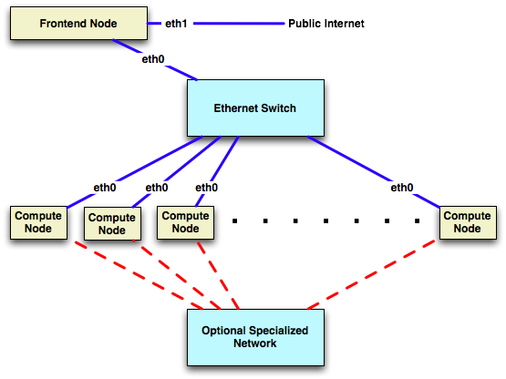

Base Roll: Users Guide: 
| ||
|---|---|---|
| Prev | Chapter 2. Installing a Rocks Cluster | Next |
This chapter describes the steps to build your cluster and install its software.
Processors
x86 (ia32, AMD Athlon, etc.)
x86_64 (AMD Opteron and EM64T)
Networks
Ethernet
 | Specialized networks and components (e.g., Myrinet, Infiniband, nVidia GPU) are also supported. Hardware requirements and software (Rocks Rolls) can be found on the respective vendor web sites. |
Frontend Node
Disk Capacity: 20 GB
Memory Capacity: 1 GB
Ethernet: 2 physical ports (e.g., "eth0" and "eth1")
BIOS Boot Order: CD, Hard Disk
Compute Node
Disk Capacity: 20 GB
Memory Capacity: 1 GB
Ethernet: 1 physical port (e.g., "eth0")
BIOS Boot Order: PXE (Network Boot), CD, Hard Disk
The first thing to manage is the physical deployment of a cluster. Much research exists on the topic of how to physically construct a cluster. A majority of the O'Reilly Book Building Linux Clusters is devoted to the physical setup of a cluster, how to choose a motherboard, etc. Finally, the book How to Build a Beowulf also has some good tips on physical construction.
We favor rack-mounted equipment because of its relative reliability and density. There are Rocks clusters, however, that are built from mini-towers. Choose what makes sense for you.
The following diagram shows how the frontend and compute nodes must be connected:

On the compute nodes, the Ethernet interface that Linux maps to eth0 must be connected to the cluster's Ethernet switch. This network is considered private, that is, all traffic on this network is physically separated from the external public network (e.g., the internet).
On the frontend, at least two ethernet interfaces are required. The interface that Linux maps to eth0 must be connected to the same ethernet network as the compute nodes. The interface that Linux maps to eth1 must be connected to the external network (e.g., the internet or your organization's intranet).